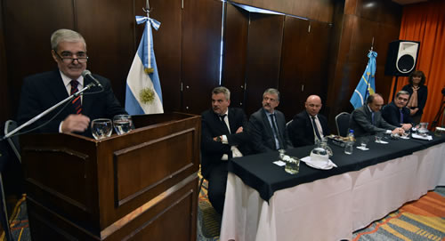
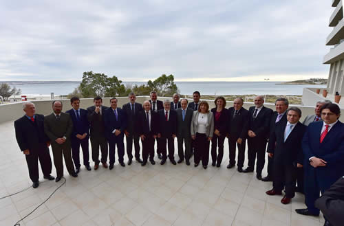

Real Chubut - Agencia de Noticias


Das Neves pidió la desfederalización del "narcomenudeo"

Lucha antinarco.
Lo hizo al dejar inaugurada formalmente la reunión del Consejo Federal de Política Criminal en Puerto Madryn. El mandatario provincial sostuvo que es una de las "decisiones clave para que la Justicia de cada provincia se haga cargo de darle celeridad a la lucha contra el flagelo de la droga".
El gobernador del Chubut, Mario Das Neves, presidió la inauguración formal de la reunión del Consejo Federal de Política Criminal en el Rayentray Hotel de Puerto Madryn. Durante el acto el mandatario provincial instó a la desfederalización del denominado "narcomenudeo" para brindarle herramientas a la Justicia de cada provincia para que actúe "con rapidez en la lucha contra la droga".
Además del gobernador presidieron el importante encuentro el presidente del Consejo Federal de Política Criminal de los Ministerios Públicos de la República Argentina, Pablo López Viñals; el presidente del Consejo de Procuradores, Fiscales, Defensores y Asesores Generales de la República Argentina, Mario Oscar Bongianino; el procurador General de la provincia del Chubut, Jorge Miquelarena; el responsable de la Agencia Provincial para la Prevención de la Drogodependencia, Claudio Mate, y el intendente de Puerto Madryn, Ricardo Sastre.
"DESFEDERALIZACIÓN DEL NARCOMENUDEO"
Ante un salón colmado de procuradores y fiscales de distintas provincias del país, al brindar el discurso de apertura, el gobernador hizo hincapié en que el encuentro "quizás sea la oportunidad para dar un paso importante en cuanto a la lucha contra la droga".
"La desfederalización del denominado narcomenudeo para que la Justicia de cada provincia se haga cargo por cuenta propia de dar las batallas que sean necesarias, es una de las decisiones claves", porque "conocemos nuestras calles, nuestros barrios y los lugares donde esa metodología se ha insertado, como una mano siniestra, para provocar un daño que en muchos casos resulta irreparable", subrayó.
Remarcó que "tenemos que actuar con celeridad en la toma de decisiones que podrían darnos mejores resultados investigativos y con ellos poder ponerle un freno al flagelo que nos está consumiendo".
FEDERALISMO Y PARTICIPACIÓN
En otro pasaje de su discurso, el mandatario provincial agradeció que "hayan elegido nuestra provincia para un encuentro de esta naturaleza, estoy seguro que este encuentro tendrá la dinámica que todos esperamos y además tengo la seguridad que marcará un antes y un después en cuanto a las decisiones que darán lugar las conclusiones finales".
"Como su nombre lo indica este Consejo Federal de Política Criminal es un ejemplo de federalismo y participación, basta para dar cuenta de ello con la presencia de todos ustedes, representantes de una de las partes más importantes de la Justicia de cada uno de los Estados provinciales de la República Argentina y encargados de diseñar las políticas de persecución penal", destacó Das Neves.
Además Das Neves explicó que "a partir de la creación de este Consejo se han alcanzado objetivos importantes, como la instalación de laboratorios de investigación forense en todo el país, lo que no es un hecho menor".
"Yo no soy abogado, pero deben saber que en estos años en que me tocó conducir la provincia he aprendido mucho escuchando y palpando los sentimientos de la gente", aseguró el mandatario.

TRABAJO PERMANENTE
El gobernador dejó en claro que "no soy un político que se queda mirando lo que pasa alrededor y de esperar que lleguen los problemas, sino que voy a ellos porque es la mejor manera de, primero, entenderlos, y después solucionarlos".
"Recorro pueblos, barrios y casas, hablo con los ciudadanos de Chubut el tiempo que sea necesario y eso me permite poder decirles hoy que conozco la angustia de muchas madres que ven desmembrada la familia y con ellos sus sueños porque alguno de sus hijos ha sido captados por ese flagelo universal que es la drogadicción", enfatizó.
"Les puedo asegurar que hay mujeres a las que ya no les quedan lágrimas y jóvenes a los que no les queda futuro porque la droga se los ha consumido. Sé también del miedo y la preocupación por los crecientes hechos de inseguridad, los ciudadanos quieren vivir libres y no presos de sus propios temores".
"Necesitamos desterrar estos dos flagelos de manera urgente, y por eso tenemos la esperanza de contar con una Justicia dinámica, transparente e independiente que actúe en tiempo real", demandó el gobernador.
GESTOS POLÍTICOS
Das Neves manifestó que "les quiero contar que para dar un paso más en esta lucha a veces desigual y responder a los reclamos de justicia de nuestra sociedad, es que allá por el año 2005 en mi primer gestión cambiamos el sistema procesal que teníamos por uno acusatorio que respete los distintos roles de cada uno en el proceso, como son los jueces, los defensores, los fiscales y los principios que la propia sociedad reclama, celeridad, transparencia y publicidad de todos los actos judiciales".
"Así fue como en el año 2006 se puso en vigencia el Código Procesal Penal de Chubut, ahora a diez años de su puesta en vigencia firmé un decreto conformando una comisión revisora para analizar la marcha de esta herramienta procesal y eventualmente sugerir las reformas que sean necesarias".
En ese sentido expresó el mandatario que "sé que es un Código que ha sido tomado como ejemplo por muchas provincias y que por eso tal vez necesite de las correcciones que los nuevos tiempos imponen, y por eso hemos tenido un avance importante en la Justicia penal de la Provincia en general y en el Ministerio Público Fiscal de nuestra provincia, que ha sido tomado y elogiado por la Procuración General de la Nación", remarcó.
Al finalizar su discurso, Das Neves se dirigió a los procuradores de todo el país y les expresó su agradecimiento "por estar acá, valoro el compromiso que han asumido en este Consejo en la lucha contra el narcomenudeo". Indicó que "queremos que se sientan como en su casa y logren un paso adelante en estas luchas que las realidades les han impuesto", concluyó.
PUBLICIDAD